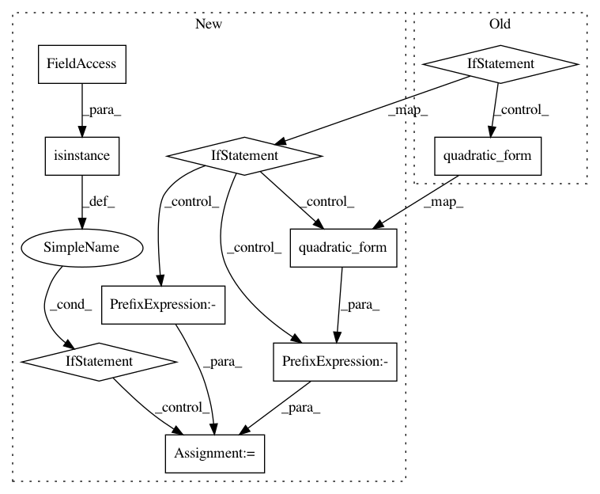

6c045f28b527f92c7dac1ef729071604f4e038ac,paysage/models/hidden.py,HopfieldModel,joint_energy,#HopfieldModel#Any#Any#Any#,273
Before Change
def joint_energy(self, visible, hidden, beta=1):
energy = -B.dot(visible, self.params["visible_bias"]) - B.msum(hidden**2, axis=1)
if len(visible.shape) == 2:
energy -= beta * B.batch_dot(visible.astype(numpy.float32), self.params["weights"], hidden.astype(numpy.float32))
else:
energy -= beta * B.quadratic_form(visible, self.params["weights"], hidden)
return B.mean(energy)
def marginal_free_energy(self, visible, beta=1):
J = B.dot(self.params["weights"], self.params["weights"].T)
After Change
return derivs
def joint_energy(self, visible, hidden, beta=1):
if len(visible.shape) == 2:
energy = -B.batch_dot(visible.astype(numpy.float32), self.params["weights"], hidden.astype(numpy.float32))
else:
energy = -B.quadratic_form(visible, self.params["weights"], hidden)
if isinstance(beta, numpy.ndarray):
energy *= beta
energy -= B.dot(visible, self.params["visible_bias"]) + B.msum(hidden**2, axis=1)
return B.mean(energy)
def marginal_free_energy(self, visible, beta=1):
In pattern: SUPERPATTERN
Frequency: 3
Non-data size: 10
Instances
Project Name: drckf/paysage
Commit Name: 6c045f28b527f92c7dac1ef729071604f4e038ac
Time: 2017-01-05
Author: charlesfisher@Charless-MacBook-Pro.local
File Name: paysage/models/hidden.py
Class Name: HopfieldModel
Method Name: joint_energy
Project Name: drckf/paysage
Commit Name: 6c045f28b527f92c7dac1ef729071604f4e038ac
Time: 2017-01-05
Author: charlesfisher@Charless-MacBook-Pro.local
File Name: paysage/models/hidden.py
Class Name: RestrictedBoltzmannMachine
Method Name: joint_energy
Project Name: drckf/paysage
Commit Name: 6c045f28b527f92c7dac1ef729071604f4e038ac
Time: 2017-01-05
Author: charlesfisher@Charless-MacBook-Pro.local
File Name: paysage/models/hidden.py
Class Name: GaussianRestrictedBoltzmannMachine
Method Name: joint_energy